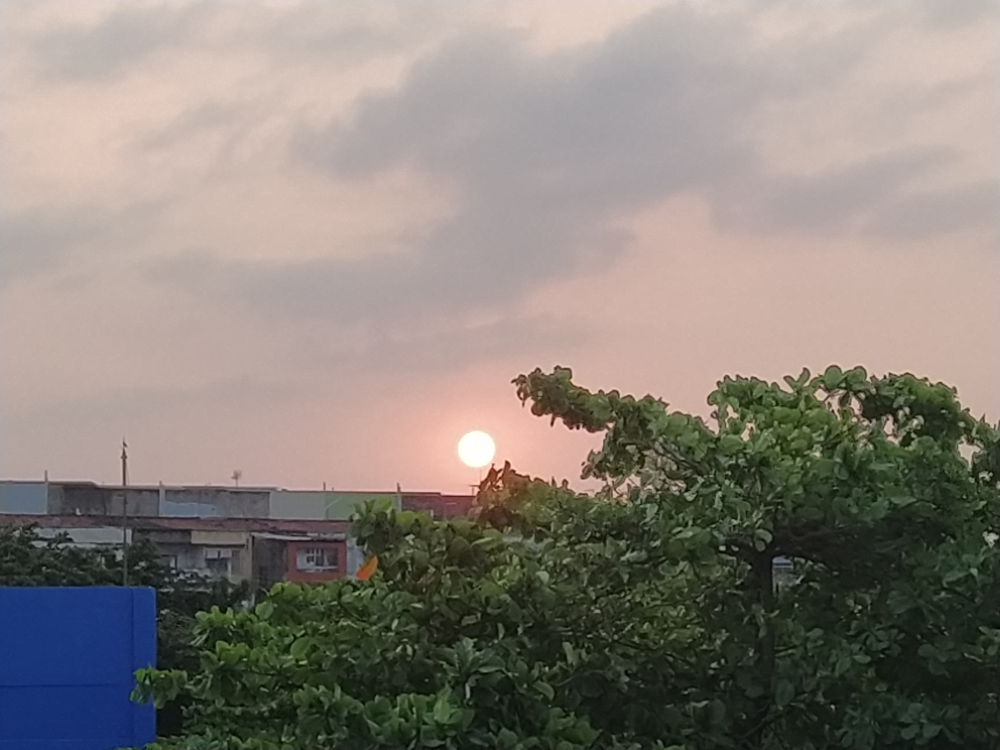

Post #1
I am a master's in Chemical Engineering in flow assurance of waxy oils. During my research, I applied some characterization methods like DSC, microscopy, and rheology and developed kinetic and rheological models to fit experimental data. During these activities, some tools like programming in FORTRAN and Matlab languages, image processing in Fiji, and parameter estimation were applied. Besides, I am also a bachelor in Chemical Engineering and I had experience with scientific initiation made in my undergraduate course focused on modeling, simulation, and heuristic optimization of processes. LinkedIn